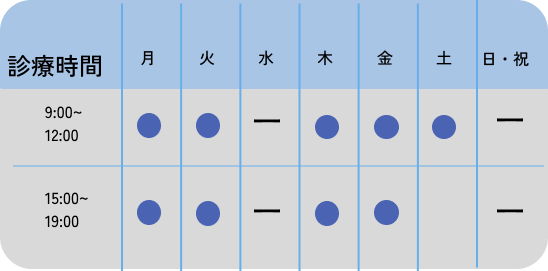
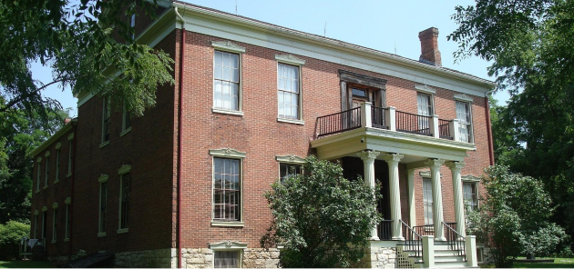
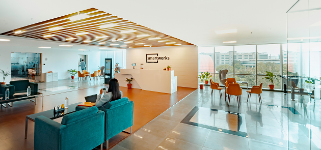
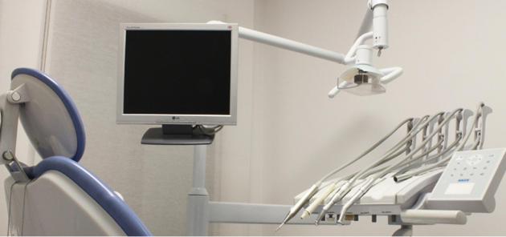
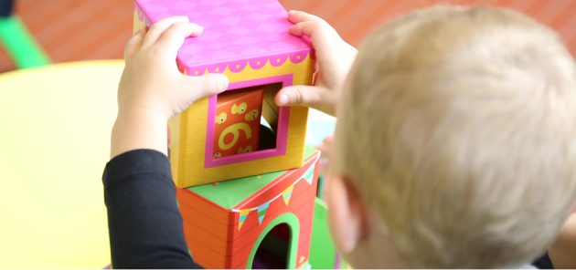
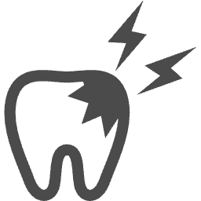

当院について
院長挨拶

お口の健康から、皆さまの笑顔を守ります。
当院のホームページをご覧いただき、ありがとうございます。院長のリカレント太郎です。
歯科医院に対して「痛い」「怖い」といった不安をお持ちの方も多いと思います。当院では、患者さまのお話を丁寧に伺い、安心して治療を受けていただける歯科医院であることを大切にしています。
当院のモットーは「お口の健康から、皆さまの笑顔を守ります。」です。地域の皆さまのお口の健康を支えられる存在を目指しています。お口のことで気になることがありましたら、どうぞお気軽にご相談ください。
ー院長 リカレント太郎
院内紹介

クリニック外観
地域の皆さまに安心してご来院いただけるよう、明るく親しみやすい外観のクリニックです。初めての方でも入りやすい雰囲気づくりを大切にし、どなたでも気軽に立ち寄っていただける歯科医院を目指しています。お口の健康について気になることがありましたら、どうぞお気軽にご相談ください。

待合室
患者さまにリラックスしてお過ごしいただけるよう、落ち着いた雰囲気の待合室をご用意しています。診療までの時間をできるだけ快適にお過ごしいただけるよう、清潔で居心地のよい空間づくりを大切にしています。どなたでも安心して通える歯科医院を目指しています。

診察室
清潔で落ち着いた環境の診察室で、患者さま一人ひとりに丁寧な診療を行っています。安心して治療を受けていただけるよう、衛生管理を徹底し、リラックスできる環境づくりを心がけています。患者さまのお悩みやご希望をしっかりとお伺いし、わかりやすい説明と丁寧な治療を大切にしています

キッズスペース
小さなお子さま連れの方にも安心して通っていただけるよう、院内にはキッズスペースをご用意しています。待ち時間も楽しく過ごしていただけるよう、お子さまが安心して遊べる環境づくりを大切にしています。ご家族皆さまで安心して通える歯科医院を目指しています🦷
診療内容

虫歯治療
歯周病治療
審美歯科
ホワイトニング
小児歯科
よくあるご質問
Q1. 初めてですが、予約は必要ですか？
A. 当院では、患者さまをお待たせしないために予約制を基本としております。 お電話またはWEB予約からご予約のうえご来院ください。 急な痛みなどの場合は、可能な限り対応いたしますのでお気軽にご連絡ください。
Q2. 治療は痛くありませんか？
A. 歯科治療に不安をお持ちの方も多いと思います。 当院ではできるだけ痛みを抑えた治療を心がけています。 患者さまの状態やご希望を丁寧にお伺いし、無理のない治療を進めていきます。
Q3. 保険診療は受けられますか？
A. はい、当院では健康保険を利用した保険診療に対応しております。 症状や治療内容によっては自費診療をご案内する場合もありますが、 その際は事前にわかりやすくご説明いたします。
Q4. 子どもも診てもらえますか？
A. はい、小さなお子さまの診療にも対応しております。 お子さまが歯医者を怖がらないよう、無理のないペースでやさしく診療を行います。 ご家族皆さまで安心してご来院ください。
Q5. 定期検診はどのくらいの頻度で受ければいいですか？
A. お口の状態にもよりますが、一般的には3〜6か月に一度の定期検診をおすすめしています。 定期的な検診とクリーニングを行うことで、むし歯や歯周病の予防につながります。
Q6. クレジットカードは使えますか？
A. お支払い方法については、現金のほかクレジットカードにも対応しております。 詳しい対応ブランドやお支払い方法については受付までお気軽にお問い合わせください。
Q7. 駐車場はありますか？
A. はい、当院では患者さま専用の駐車場をご用意しております。 お車でも安心してご来院いただけます。 場所などの詳細はアクセスページをご確認ください。
Q8. 急に歯が痛くなった場合は診てもらえますか？
A. 急な痛みやトラブルにもできる限り対応いたします。 ご予約の患者さまを優先してご案内しておりますので、 まずはお電話にてご連絡ください。